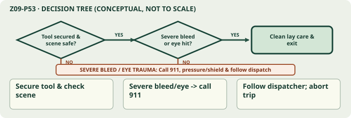

Z09-P53 · Tools and construction · New manuscript
Manage bleeding cuts, eye debris and tool-injury escalation in the field
Respond calmly and within lay first-aid boundaries if a blade slip, flying wood chip or cord snap causes injury.
When it applies · Immediate lay response to accidental cuts, puncture wounds, eye strikes or crush injuries during tool use (detailed clinical care belongs in Z10).
Equipment · Clean gauze/cloth dressing, clean potable water if needed for minor rinse, first-aid kit and communication device.

Actions
- Stop tool work immediately, secure the sharp tool out of the way and check scene safety, responsiveness, breathing and life-threatening bleeding first.[T01, K03]
- For severe or spurting bleeding, call 911 immediately, apply firm direct pressure with clean dressing and follow dispatcher instructions within your training.[T02, T01]
- For eye strikes from wood chips, metal spalls or snapped cords, do NOT rub the eye or attempt to pull embedded objects out—shield the eye gently without pressure and seek urgent medical care.[T01, T02, K08, ED]
Failure recognition · Trying to keep working after a deep hand cut, rinsing an open wound with untreated creek water or rubbing a metal-shard eye injury.[T01, W29, K08]
Verify · Confirm the sharp tool is secured, bleeding control or eye shielding is underway and emergency help or safe evacuation is activated when warranted.[T01, T02, ED]
Stop or change course · Life-threatening bleeding, deep tendon/joint cuts, embedded foreign objects, eye trauma or suspected shock require immediate 911/SAR activation and termination of the trip.[T01, T02, T06]
Evidence and editorial notes
- K03 · USDA Forest Service · Handtools for Trail Work (0523-2810-MTDC) (agency handbook)
- Section: Tool Selection, Inspection and Safe Transport · Conditions: Trail and campsite hand tools (axes, saws, shovels, pulaskis, wedges)
Support: Inspect handles for splits, loose heads and secure wedges before every use; sheath sharp edges during carry and maintain a clear work circle around swinging tools.
Limitations: Forestry guidelines apply to maintained commercial tools; improvised stone or salvaged blades carry higher failure risk. · Conflicting evidence: None; aligns with OSHA-3080.
Editorial note: Grounds woodworking, swinging-tool clearance, carrying and maintenance cards. · Specialist reviewer: Forestry tool safety and trail maintenance
Primary source · checked 2026-11-24 - K08 · OSHA · Hand and Power Tools (OSHA 3080) (agency PDF)
- Section: Personal Protective Equipment and Work Area Control · Conditions: Cutting, splitting, striking and rigging operations
Support: Maintain stable footing, eye and hand protection appropriate to flying chips or snapped cordage, and clear bystanders outside the swing or snap-back zone.
Limitations: Field kits often lack shop PPE, requiring slower conservative technique and lower-energy methods. · Conflicting evidence: None; drives snap-back and work-circle exclusion zones in Z09.
Editorial note: Enforces conservative work circles and snap-back clearance. · Specialist reviewer: Tool safety and occupational safety
Primary source · checked 2026-11-24
Current assessment · A04-K08 (2026-11-25) · Open: support partial or missing (A04): Eye protection requirements are task-specific. Safe stance, glove choice and recoil envelope require each tool or rigging source. Limits: Specialist review PENDING (Tool safety and occupational safety); publication HOLD. All release decisions pending. - T01 · American Red Cross · First Aid Steps (current web edition)
- Section: First Aid Steps > Check the scene; check the person · Conditions: Lay responder in United States; assess safety before contact
Support: Check scene safety, responsiveness, breathing and immediately life-threatening conditions.
Limitations: Lay guidance does not replace advanced clinical or rescue protocols. · Conflicting evidence: None; universal first-response opening gate.
Editorial note: Anchors scene-safety-first rule across Z01. · Specialist reviewer: EMS and wilderness medicine
Primary source · checked 2026-11-24 - T02 · American Red Cross · First Aid Steps (current web edition)
- Section: First Aid Steps > Call 9-1-1 · Conditions: Lay emergency response to unresponsiveness, abnormal breathing or severe bleeding
Support: Activate EMS and get needed equipment. Follow dispatcher directions and act within training.
Limitations: Remote locations may delay EMS arrival, requiring sustained stabilization after activation. · Conflicting evidence: None; aligns with NPS-E.
Editorial note: Mandates early emergency activation and dispatcher adherence. · Specialist reviewer: EMS and wilderness medicine
Primary source · checked 2026-11-24 - T06 · NPS · Outdoor Emergency Plan (current web edition)
- Section: If you get lost or hurt; call for help · Conditions: Outdoor US emergency
Support: Communicate location, last known point, situation and needs. Stay put when unable to establish a safe route unless immediate danger requires movement.
Limitations: Cell signal is unreliable in backcountry terrain; pre-trip plans bridge communication gaps. · Conflicting evidence: None; core lost-person decision rule.
Editorial note: Foundation for stay/signal/move and dispatch handoff cards. · Specialist reviewer: Search and rescue
Primary source · checked 2026-11-24 - W29 · CDC · How to Make Water Safe in an Emergency (2024-09-19)
- Section: Use safe water for drinking, brushing teeth and food preparation · Conditions: Applicable emergency-water advice and permissible uses under active local advisory
Support: Use confirmed safe water for oral and food-contact tasks. Follow current local instructions for each use.
Limitations: Infant formula requires separate P26 conditions. Wound care requires the appropriate care source. · Conflicting evidence: See A02 claim audit for boundaries.
Editorial note: Separates potable-required tasks from non-potable utility uses. · Specialist reviewer: Public health and wilderness medicine
Primary source · checked 2026-11-24
Current assessment · A04-W29 (2026-11-25) · Bounded support newly confirmed (A04): Confirms safe water for oral and food-contact uses and the local-advisory boundary. Limits: Specialist review PENDING (Public health and wilderness medicine); publication HOLD. All release decisions pending.
Source lineage · ARC first aid and OSHA 3080; new manuscript · Classification · New manuscript.